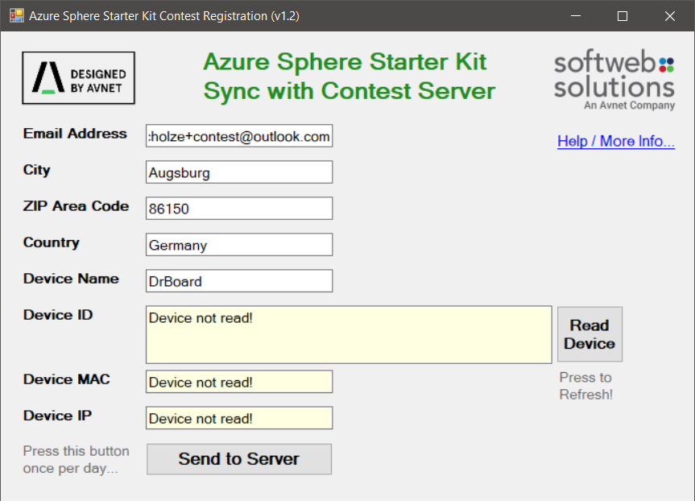
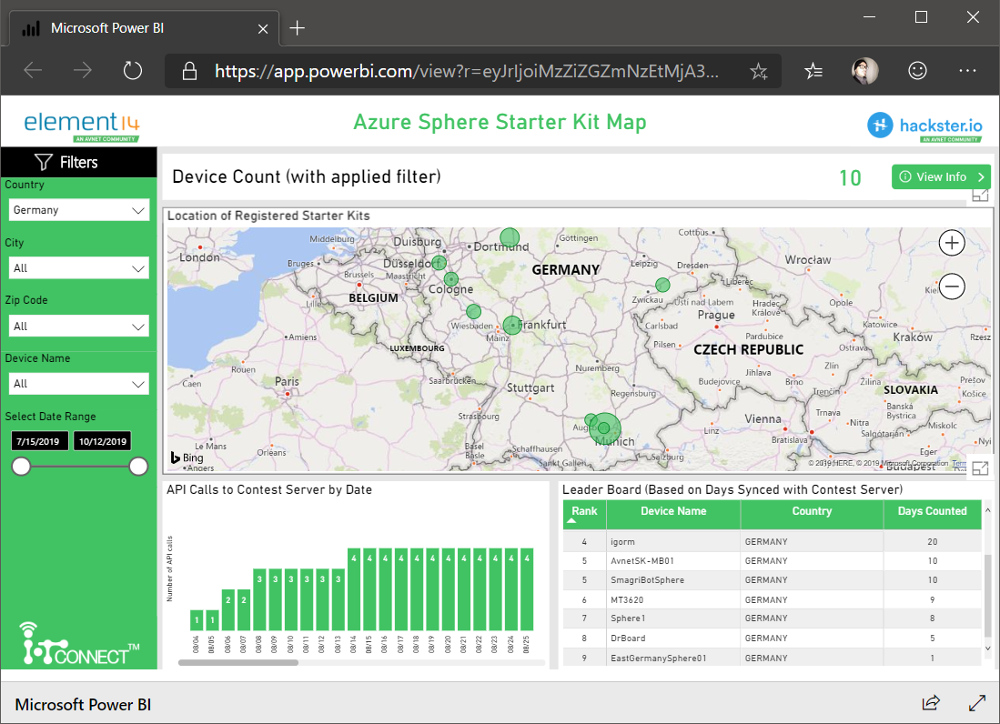

Hackster.io hat vor einigen Wochen einen Contest gestartet um das Microsoft Azure Sphere Developer Kit zu promoten. Hierbei konnten einige große Preise wie Holo Lenses oder andere Microsoft Surface Hardware als auch Raspberry Pies und Co. abgestaubt werden.
Ping to Pi
Um im kleinen Tier, also für die Pis teilnehmen zu können, musste man täglich, für 14 aufeinander folgenden Tagen, sein Azure Sphere Board gegen einen Server anpingen lassen.
 Das ist zwar äussert unspekakulär aber das Contest Dashboard hat, zu mindestens für mich, genügend Features geboten um dennoch am Ball zu bleiben.
Erste Berührungen mit Microsoft PowerBI
Dies war meine erste halbwegs produktive Berühung mit Microsoft Power BI Apps welche in diesem Falle als eine Art Dashboard fungierte. Diese zeigt eine geografische Aufteilung der Contest-Teilnehmer an als auch deren aktueller Dauer der Teilnahme. Was man hier gut sah war, dass vor allem in Deutschland Azure Sphere unter Makern, beziehungsweise privaten Benutzern, noch sehr zurück hängt und es nur vereinzelte Einträge gab. Ich hoffe das auch Microsoft dies sieht und eventuell hier mehr Initiative zeigt um diese noch recht junge Plattform weiter zu promoten.

Generell fand ich es eine sehr amüsante und kurzweilige Idee sich dauerhaft mit Microsoft Azure Sphere auseinander zusetzen.
Super Idee, bitte nachbessern und wiederholen!
Allerdings waren, vor allem zu Anfangs, die Informationen zu dem Wettbewerb sehr verteilt, lückenhaft und nach meiner Meinung auch manchmal unterschiedlich. So konnte ich dies damals zum Beispiel leider nicht für einen Artikel auf Dr. Windows verwenden. Sehr schade.